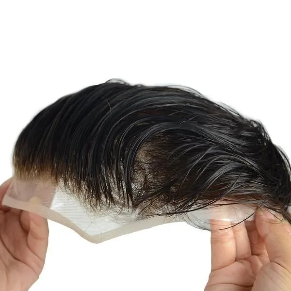

Lace (Malla)
Desde 250€
Base de malla ultrafina. Máxima transpiración, ideal para deportistas y climas cálidos.
- Transpirable
- Ligera
- Durabilidad: 6-8 meses
Selecciona la base que mejor se adapte a tu estilo de vida, con colocación y mantenimiento en Sevilla

Desde 250€
Base de malla ultrafina. Máxima transpiración, ideal para deportistas y climas cálidos.
Desde 300€
Base de poliuretano ultrafino. Efecto piel real, contorno indetectable.
Desde 350€
Combinación Lace + Skin. Lo mejor de ambas tecnologías en una sola prótesis.